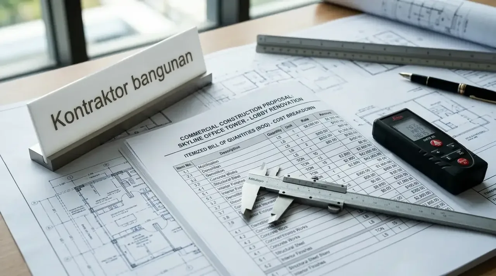

Bagaimana Cara Kerja Proses Kirim RFP Proyek Konstruksi Komersial yang Efektif?
Sistem kirim rfp proyek konstruksi komersial bekerja dengan mentransformasikan dokumen kerangka acuan kerja perusahaan menjadi proposal teknis, estimasi RAB, dan jadwal pelaksanaan terintegrasi.
Dalam ekosistem pengadaan barang dan jasa korporat, Request for Proposal (RFP) bukan sekadar formulir permintaan harga sederhana, melainkan instrumen hukum dan teknis yang memuat kriteria keberhasilan proyek. Ketika tim procurement menyusun dokumen ini, seluruh variabel utama proyek—seperti lokasi lahan, luasan tapak, spesifikasi arsitektur, standar keamanan fasilitas, hingga batasan anggaran—didefinisikan secara eksplisit. Kontraktor penerima dokumen kemudian melakukan peninjauan teknis (technical review) dan simulasi perhitungan biaya berdasarkan data empiris lapangan.
Proses tanggapan RFP yang efisien mengandalkan integrasi teknologi estimasi biaya dan basis data rantai pasok material. Kontraktor terpercaya akan melakukan analisis kelayakan tapak, evaluasi struktur, serta penjadwalan alokasi tenaga kerja segera setelah dokumen diterima. Hasil akhirnya adalah dokumen proposal balasan komprehensif yang berisi rincian item pekerjaan (Bill of Quantities), kurva S pelaksanaan, serta usulan opsi Value Engineering (VE) untuk mengoptimalkan alokasi capital expenditure (CapEx) perusahaan Anda.
Berdasarkan Riset Manajemen Pengadaan B2B Indonesia 2025 yang dirilis oleh Ikatan Ahli Pengadaan Indonesia (IAPI), perusahaan yang menggunakan dokumen RFP terstandar berhasil menekan variasi deviasi anggaran proyek konstruksi hingga di bawah 3,5%. Sementara itu, Data Performa Konstruksi Komersial 2026 menunjukkan bahwa 87% pengambil keputusan B2B memprioritaskan kontraktor yang mampu memberikan respons proposal teknis secara utuh dalam waktu kurang dari 5 hari kerja. Kontraktor Bangunan siap memenuhi standar efisiensi ini untuk mendukung percepatan proyek bisnis Anda.
- Kepastian Biaya (Fixed Cost): Breakdown RAB terperinci mengunci harga satuan dan meminimalisasi biaya tak terduga saat pelaksanaan di lapangan.
- Transparansi Kurva S: Jadwal proyek dipetakan dengan Critical Path Method (CPM) sehingga milestone progres dapat dipantau secara real-time.
- Value Engineering (VE): Memberikan alternatif pemilihan spesifikasi material setara yang lebih ekonomis tanpa mengurangi faktor keamanan.
Mengapa Cara Ajukan RFP Kontraktor Harus Memuat Spesifikasi Teknis Detail?
Penerapan cara ajukan RFP kontraktor dengan detail spesifikasi teknis menjamin akurasi perhitungan harga, mencegah biaya tersembunyi, serta mempercepat proses perbandingan proposal.
Kerancuan atau keraguan dalam dokumen tender adalah penyebab utama terjadinya perbedaan angka penawaran yang terlampau jauh antar-vendor. Jika suatu RFP hanya memuat informasi umum seperti "pembangunan gudang luasan 1.000 m²", maka setiap kontraktor akan mengasumsikan standar material yang berbeda-beda. Hal ini menyulitkan tim pengadaan dalam melakukan evaluasi apple-to-apple. Dengan menyertakan rincian mutu beton, merk penutup atap, spesifikasi kelistrikan, hingga jenis pelapis lantai industri, proposal yang dihasilkan akan sepenuhnya objektif dan terukur.
Kejelasan spesifikasi teknis juga melindungi perusahaan dari praktik hidden cost di kemudian hari. Kontraktor yang kredibel akan mengunci harga satuan material dan upah kerja berdasarkan acuan spesifikasi yang tercantum dalam RFP. Jika ada penyesuaian di lapangan, perhitungannya akan mengacu pada addendum kesepakatan awal yang transparan, sehingga pengeluaran anggaran tetap berada di bawah kendali manajemen fasilitas perusahaan Anda.
Langkah ini juga sangat mempermudah evaluasi tingkat kepatuhan regulasi. Bangunan komersial wajib memenuhi standar keselamatan kerja (K3), ketentuan garis sempadan (GSB), serta Sistem Manajemen Keselamatan Konstruksi (SMKK). Memasukkan persyaratan kualifikasi legalitas dan regulasi ke dalam RFP memastikan bahwa kontraktor yang merespons telah memiliki sertifikasi keahlian yang sah. Untuk memulai proses tender yang presisi, manfaatkan layanan dari Kontraktor bangunan dan Kirim RFP Proyek Komersial Anda sekarang juga.

Format dokumen tender RFP komprehensif memuat rincian Bill of Quantities, spesifikasi teknis arsitektural, dan timeline target pengerjaan berstandar industri.
Apa Saja Komponen Utama dalam Format RFP Proyek Bangunan Komersial?
Struktur format RFP proyek bangunan yang lengkap mencakup profil proyek, lingkup pengerjaan (Scope of Work), spesifikasi material, jadwal pelaksanaan, serta kualifikasi vendor.
Penyusunan dokumen proposal yang profesional memerlukan kerangka kerja yang sistematis agar tidak ada detail operasional yang terlewatkan. Format dokumen yang terstruktur membantu tim penilai di perusahaan Anda untuk menganalisis risiko, kapasitas finansial vendor, serta metodologi eksekusi yang ditawarkan oleh masing-masing peserta tender.
Berikut adalah susunan standar komponen yang wajib ada di dalam format RFP proyek bangunan:
- Informasi Latar Belakang & Tujuan: Uraian singkat mengenai visi proyek, fungsi operasional bangunan komersial, target kapasitas fasilitas, serta batasan waktu serah terima aset.
- Lingkup Pekerjaan (Scope of Work): Batasan pengerjaan fisik, mulai dari pembersihan lahan, pekerjaan tanah, pekerjaan struktur, arsitektur, finishing interior, hingga instalasi MEP (Mechanical, Electrical, Plumbing).
- Spesifikasi Material & Standar Mutu: Ketentuan spesifik mengenai kualifikasi bahan bangunan, merk yang direkomendasikan, serta standar pengujian laboratorium (mutu beton, uji tarik baja, dan sertifikasi SNI).
- Jadwal & Milestone Target: Timeline penyelesaian proyek yang diharapkan, jadwal koordinasi mingguan, target serah terima parsial, dan deadline serah terima operasional (turnkey).
- Persyaratan Administrasi & Legalitas: Kebutuhan sertifikasi badan usaha (SBU), lisensi K33L konstruksi, rekam jejak portofolio proyek serupa, serta jaminan bank atau garansi pemeliharaan.
- Kriteria Evaluasi & Format Penawaran: Petunjuk rinci mengenai format penyusunan RAB (Bill of Quantities), pembobotan evaluasi teknis vs komersial, serta cara pengiriman berkas proposal penawaran.
Dengan menerapkan kriteria di atas, tim pengadaan dapat langsung memfilter vendor yang benar-benar memiliki kapasitas teknis dan finansial yang relevan dengan skala investasi perusahaan Anda.
Bagaimana Komparasi Respons RFP Antara Sistem Konvensional dan Terintegrasi?
Analisis komparasi menunjukkan bahwa respons RFP dari kontraktor terintegrasi unggul dalam ketepatan estimasi RAB, kepastian jadwal, serta penyediaan opsi Value Engineering.
Pemilihan mitra konstruksi B2B memerlukan kejelian dalam menilai kualitas tanggapan proposal. Kontraktor konvensional sering kali memberikan penawaran harga secara global tanpa rincian analisis harga satuan yang jelas. Di sisi lain, kontraktor B2B modern yang berbasis sistem terintegrasi menyajikan proposal balasan yang membedah setiap elemen biaya secara rinci, dilengkapi dengan analisis manajemen risiko dan simulasi jadwal pengerjaan.
| Parameter Evaluasi | Respons Kontraktor Konvensional | Respons Kontraktor Bangunan (Terintegrasi) |
|---|---|---|
| Kecepatan Respons Penawaran | 10 - 20 Hari Kerja | 3 - 5 Hari Kerja (Fast-Track) |
| Transparansi RAB | Harga Global / Lump Sum Khas | Breakdown Rinci Per Item Pekerjaan & AHSP |
| Simulasi Penjadwalan | Estimasi Kasar / Tanpa Kurva S | Kurva S Digital & Critical Path Method (CPM) |
| Analisis Value Engineering | Jarang Disediakan | Disediakan untuk Efisiensi Anggaran CapEx |
| Kepatuhan Legal & K33L | Terbatas / Opsional | Penuh (Sertifikasi SBU, SMK3, & STRA/SKA) |
| Garansi Pemeliharaan | Garansi Lisan / Terbatas | Garansi Pemeliharaan Tertulis hingga 12 Bulan |
Melalui tabel perbandingan tersebut, terlihat jelas bahwa respons proposal yang terstruktur dari Kontraktor Bangunan tidak hanya memberikan kepastian harga, tetapi juga memberikan kepastian tata kelola manajemen proyek (project governance) yang aman bagi para pengambil keputusan di perusahaan Anda.
Mengapa Harus Memilih Kontraktor Bangunan Sebagai Mitra Konstruksi B2B Anda?
Kontraktor bangunan menawarkan keunggulan respons RFP kilat, transparansi kalkulasi biaya, legalitas badan usaha lengkap, serta kepastian kualitas pengerjaan bergaransi.
Sebagai mitra strategis pengadaan B2B, Kontraktor Bangunan didukung oleh tim estimating engineer, arsitek, dan manajer proyek yang berpengalaman menangani berbagai cakupan pembangunan komersial di Indonesia. Kami memahami bahwa waktu adalah aset berharga bagi korporasi; oleh karena itu, sistem penilaian RFP kami dirancang untuk memproses berkas penawaran Anda secara tanggap tanpa mengurangi ketelitian perhitungan teknis.
Kami berkomitmen memberikan harga yang kompetitif melalui efisiensi rantai pasok bahan bangunan dan penerapan metode konstruksi modern. Setiap proposal yang kami kirimkan mencakup garansi kepastian biaya (fixed-price guarantee), jaminan pelaksanaan K3 di lokasi kerja, serta dukungan layanan purna jual yang memastikan fasilitas bangunan Anda siap beroperasi secara optimal sejak hari pertama penyerahan kunci.
Pertanyaan yang Sering Diajukan (FAQ)
Kesimpulan Praktis
Mengoptimalkan alur pengadaan fasilitas korporasi melalui langkah kirim rfp proyek konstruksi komersial adalah keputusan strategis untuk menjamin efisiensi investasi CapEx dan ketepatan waktu operasional bisnis. Dokumen RFP yang disusun secara rinci memicu respons penawaran yang transparan, akurat, dan dapat dipertanggungjawabkan secara manajemen. Dengan mengeliminasi ketidakpastian teknis sejak tahap tender, perusahaan Anda dapat mengeksekusi proyek pembangunan dengan tingkat risiko yang sangat minim.
Percayakan kebutuhan konstruksi fasilitas bisnis Anda kepada eksekutor B2B yang tepercaya, berpengalaman, dan responsif. Dapatkan analisis RAB yang presisi serta proposal komersial terbaik untuk mendukung pertumbuhan aset korporasi Anda. Segera ambil tindakan untuk mengamankan jadwal pengerjaan proyek Anda hari ini dengan mengklik tombol Kirim RFP Proyek Komersial dari Kontraktor Bangunan.